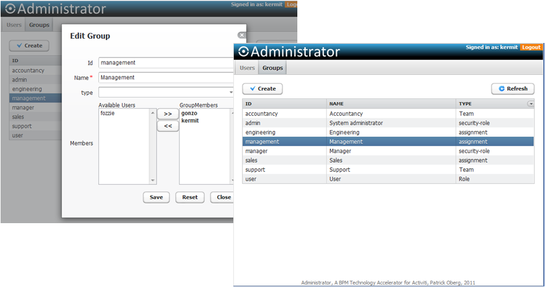

Activiti Administrator
The Activiti Administrator is the first Accelerator for Activiti to be released. The main objective of the Activiti Administrator is to provide capabilities to administrate users and groups in the Activiti BPM suite.
Features
- Create users
- Edit user details (first name, last name and password)
- Add and remove user groups
- Delete users
- Impact analysis of deleting users
- Create groups
- Edit user details (name and type)
- Add and remove users from groups
- Impact analysis of deleting groups
Architecture
The main building blocks of the Activiti Administrator are Vaadin, Spring and Activiti.
- Spring dependency injection of Activiti Services
- Vaadin for the UI layer and wrapping of Activiti data in bean containers and bean items

Setup
- Download the latest version of Activiti http://www.activiti.org/download.html
- Setup Activiti by following the Activiti user guide http://activiti.org/userguide/index.html or by following the excellent screencast provided by Joram Barrez http://www.jorambarrez.be/blog/2011/01/24/getting-started-with-activiti/
- Download the latest version of Activiti Administrator http://github.com/activiti-accelerators/activiti-administrator
- Unzip the Activiti Administrator WAR folder (activiti-administrator-1.0.X.zip)
- Copy the Activiti Administrator WAR folder to the webapps folder in Tomcat (activiti-install-dir/apps/apache-tomcat-6.0.29/webapps)